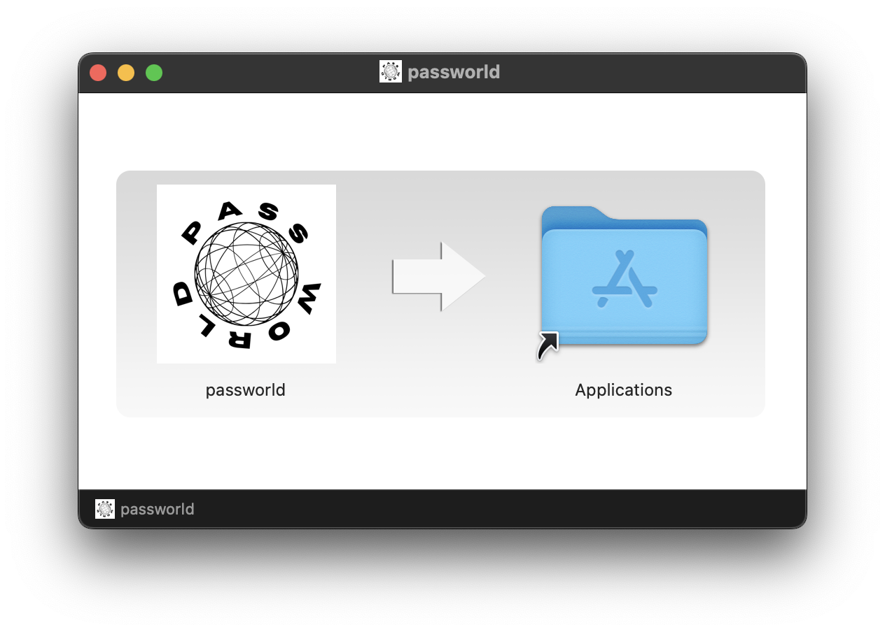

Manuales de instalación
A continuación, se muestra una guía detallada sobre como instalar PASSWORLD en las distintas plataformas soportadas.
Windows
1. Con el ejecutable .exe
1.1 Descargar el ejecutable
Puedes descargar el ejecurable oficial desde este enlace .
1.2 Ejecuta el archivo
Localiza el archivo .exe descargado y haz doble clic sobre él para iniciar la
instalación.
Sigue las instrucciones en pantalla. Podrás elegir la carpeta dónde se instalará.
1.3 Ejecutar Passworld
Después de instalarlo, se creará un acceso directo en tu escritorio. También encontrarás Passworld en el menú de aplicaciones. Haz clic en el icono para abrirlo.
1. Con el instalador .msi
1.1 Descargar el instalador
Puedes descargar el instalador oficial desde este enlace .
1.2 Ejecuta el instalador
Localiza el archivo .msi descargado y haz doble clic sobre él para iniciar la
instalación.
Sigue las instrucciones en pantalla. Podrás elegir la carpeta dónde se instalará.
1.3 Ejecutar Passworld
Después de instalarlo, se creará un acceso directo en tu escritorio. También encontrarás Passworld en el menú de aplicaciones. Haz clic en el icono para abrirlo.
Desinstalar completamente
Si quieres eliminar Passworld y todos sus datos, sigue estos pasos:
- Ve a Configuración
- Dirígete a la sección "Aplicacines > Aplicaciónes instaladas"
- Busca la aplicación passworld
- Pulsa sobre el icono de los tres puntos y elige "Desinstalar"
Linux (Basado en Debian)
1. Descargar el paquete .deb
Puedes descargar el paquete oficial desde este enlace .
2. Instalar el paquete
Puedes instalar PASSWORLD desde la terminal o a través del Centro de Software si utilizas Ubuntu.
Instalar desde la terminal
Abre una terminal y ejecuta este comando para instalar el paquete:
sudo dpkg -i passworld_1.0.0.deb
Instalar desde el Centro de Software de Ubuntu
Localiza el paquete .deb en tu explorador de archivos y haz doble clic sobre él para
instalarlo.
3. Ejecutar Passworld
Después de instalarlo, encontrarás Passworld en el menú de aplicaciones. Haz clic en el icono para abrirlo.
Desinstalar completamente
Si quieres eliminar Passworld y todos sus datos, ejecuta los siguientes comandos en la terminal:
sudo apt purge passworld sudo apt autoremove --purge rm -rf ~/.local/share/passworld
macOS (Apple Silicon)
1. Descargar el archivo .dmg
Puedes descargar el archivo oficial desde este enlace .
2. Instalar la aplicación
- Localiza el archivo
.dmgen Finder y haz doble clic sobre él - Arrastra el icono de Passworld a la carpeta de Aplicaciones 
3. Ejecutar Passworld
Después de instalarlo, encontrarás Passworld en el menú de aplicaciones. Haz clic en el icono para abrirlo. También puedes utilizar la búsqueda Spotlight para encontrarlo.
Desinstalar completamente
Si quieres eliminar Passworld y todos sus datos, ejecuta los siguientes comandos en la terminal:
rm -rf /Applications/passworld.app rm -rf /Users/g4vr3/Library/Application Support/passworld rm -rf /Users/g4vr3/Library/Saved Application State/com.g4vr3.passworld.savedState